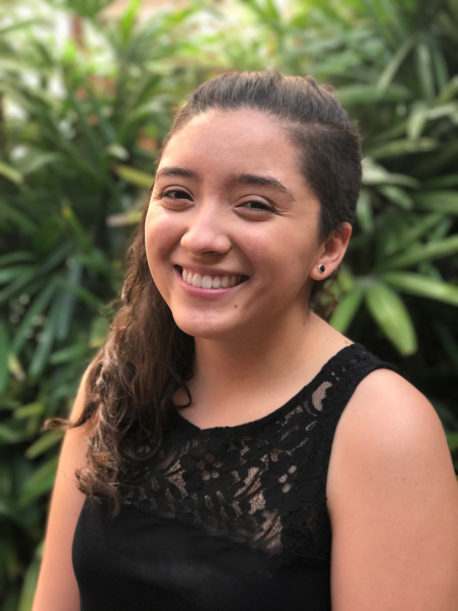

alana saavedra
EDUCATION
The University of Florida
Masters of Art in Mass Communications
Bachelors of Science in Advertising
Graduate Certificate in Web Design and Online Communications
Minor in English
CREATIVE EXPERIENCE
Art Direction Intern, MAIP Fellow | GSD&M
Concepted campaign executions with a copywriting partner and creative directors
Directed campaign productions, including photoshoots and styling
Attended weekly intern experience discussions with different departments in the agency
Lead Art Director | advnt
Collaborated with fellow advertising students to create a published book of student-produced work, the first of its kind in the UF Advertising Department
Created layouts, designs and met weekly to discuss print and production
Graphic Design Intern | University of Florida HealthStreet
Implemented the “I Am HealthStreet” campaign to increase awareness and value of health research
Designed flyers, brochures and web ads for various health workshops and HealthStreet community events
SKILLS
Proficient | InDesign, Photoshop, Illustrator, WordPress
Knowledgeable | Spanish, HTML/CSS, Premiere Pro, Sketch
AWARDS & ACCOMPLISHMENTS
Multicultural Advertising Intern Program 2017
Marshall Respess Award for outstanding advertising graduate
FOX Sports University Program